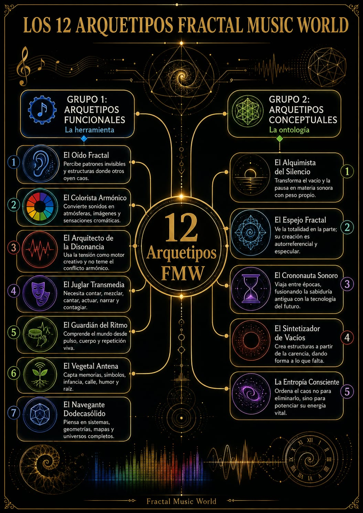

Pregunta 1 de 12
Elige la respuesta que aparece primero, antes de explicarla.
Primer Pipeline Cognitivo FMW
Doce preguntas de alto impacto para leer tu estado creativo actual, revelar tus operadores dominantes y abrir una ruta personalizada dentro del universo Fractal Music World.

Pregunta 1 de 12
Elige la respuesta que aparece primero, antes de explicarla.
Tu lectura FMW
Cómo funciona
El resultado no define una identidad permanente. Registra una configuración creativa actual que puede evolucionar en futuros ciclos.